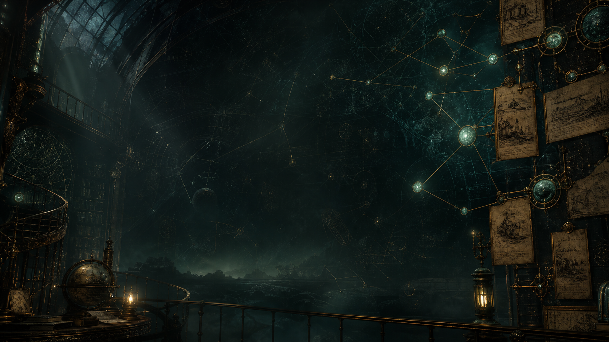

核心节点
CHRONICLE OF ELDRITCH WORKS
从早期梦境、深海证词、禁书母题，到南极深时与印斯茅斯血统疑案，把洛夫克拉夫特式作品整理成可浏览、可检索、可扩展的文学档案馆。
文献库继续扩展：每条记录加入首次发表刊物、合作作者、全文外链、译名对照与关系边。卡片使用生成式缩略图，不再只靠纯样式模拟气氛。
若长时间未出现，请检查浏览器是否允许读取本地数据文件。
时间线不再只列几个节点，而是按创作年份自动生成。点击任意节点会把检索台同步到对应作品。
点击图谱节点，查看对应母题在作品库中的分布。神话体系的关键不在记住名字，而在理解梦境、深海、禁书、远古城市和非人尺度如何反复互文。
当前节点
克苏鲁 核心神话节点，连接梦境、深海、拉莱耶和集体证词。关系网络按梦境循环、深海神话、禁书档案、远古城市、米斯卡塔尼克线索、血统身份、科学与宇宙深时等类型组织。点击节点会显示作品、首次发表刊物和它连接到的文本。

当前节点
克苏鲁的呼唤 选择一条边或一个作品节点，查看它在编年史中的关系位置。这一层把原本藏在卡片里的首次发表刊物、合作/署名背景和中英文异名抽出来，形成更像研究型档案馆的索引界面。
PUBLICATION CONSTELLATION
CREDIT DOSSIER
TITLE CROSSWALK
输入关键词、点击主题，或抽取一条档案。所有交互都在浏览器本地完成，适合静态部署和开源复用。
显示全部档案
这个站点的正确方向是：维护书目数据、中文摘要、主题索引、外部阅读入口和可扩展结构。长篇原文、译文和图片版权应交给原来源或授权版本处理。
页面以静态 HTML、CSS 和 JavaScript 构建，适合 GitHub Pages。新增数据文件、生成式图像资产、动效层、交互图谱与本地检索逻辑后，它已经从概念页升级为完整站点。